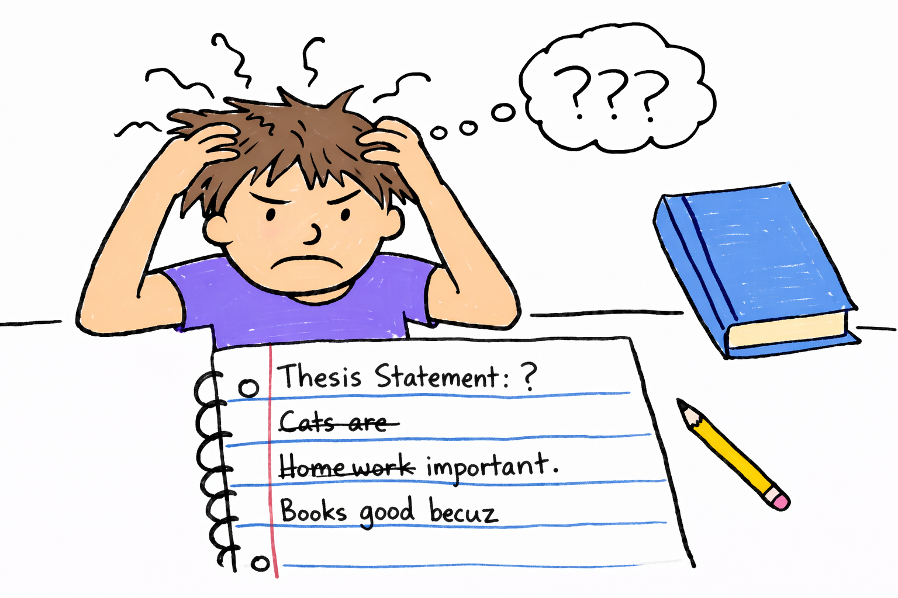
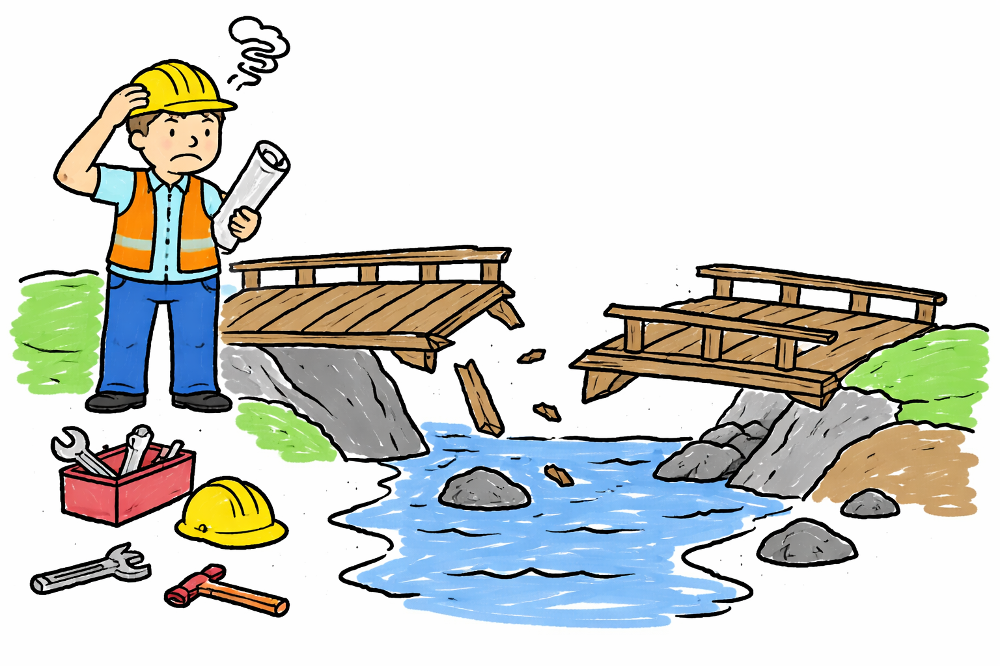
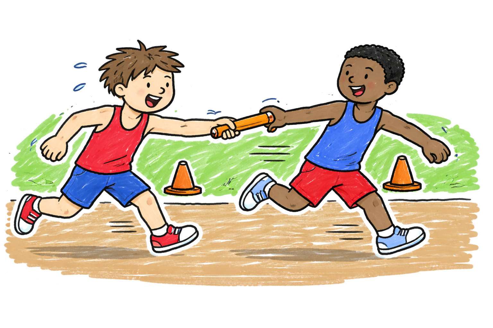

Let's Dig In!
Thesis Statement

The opening paragraph is sometimes considered to be the most difficult part in an expository essay. Many people think for a long period of time just for the first three sentences. But you might simply overthink - just go straight to your thesis statement in the opening paragraph. Let's have some quick practice.
Try to answer this question in a short paragraph: How is your day? Then, compare your answer to my good and poor answers below.
[Good Answer] (click to show):Overall, it has been a great day - I woke up early in the morning and had a great breakfast with a cup of coffee. Then, I worked through the rest of the day but is still feeling very energetic now. This answer opens with the straightforward thesis statement that provides the most direct information related to the question. Secondary information is only added later to support this thesis statement.
[Poor Answer] (click to show):I woke up early in the morning and had a great breakfast with a cup of coffee. Then, I worked through the rest of the day but is still feeling very energetic now. Overall, it has been a great day. The organization of this answer is completely opposite - providing secondary information first and delay the most crucial information to the last sentence. Your audience won't get the most important information untile the last sentence. You can imagine that if you write your article this way, your readers may get bored and stop reading even before they get to the thesis statement, which is bad for you.
Of course, in some cases, you can find the thesis statement in the last sentence of the opening paragraph, following a very attractive short story to keep readers engaged. Can you tell an attractive story before answering the question How is your day?
[Good Answer (narrative style)] (click to show):It is certainly not an ordinary day. I woke up in sweat from a nightmare, in which I was chased by a serial killer. I thought it was an ominous sign, and missing the bus to work later on the rainy day only upset me even more. However, just as I complained about my misery, a lady drove by and asked me if I needed a ride. I jumped into her car immediately, and it turned out we actually worked in the same place. We chatted happily, and the traffic jam was nothing. I think it was the best day so far this year. I hope the above example shows how a narrative opening paragraph makes people want to know more about the story, so they don't experience any boredom until they reach the thesis statement.
Cohesive Writing

Making logical connection between different sentences within each paragraph is not just about adding a punctuation mark between every two sentences. There are too many details to be covered in cohesive writing, and I will only briefly explain two common scenarios.
First, we frequently use a linking word, such as however, in contrast, among many others (see a more complete list here), to address the relationship between two sentences. But did you really use a linking word correctly? Below are examples of however. Think one yourself to see if you have the right logical connection with however before checking the good and poor example.
[Good Example] (click to show):The author of this best-selling novel expresses his gratitude to his parents' support. However, he claims that his parents did not fully believe in his potential to succeed in the publication industry. This is a good example of using however to connect two related sentences showing contrastive aspects. The author thanks his parents but also criticizes his parents; same targets (parents), opposite attitudes.
[Poor Example] (click to show):The author of this best-selling novel expresses his gratitude to his parents' support. However, he also claims that he did not get many inquiries from publishers after completing the novel. This is an example of misusing however to connect two unrelated sentences. The focus of the first sentence is the author's thankfulness towards his parents, and the focus of the second sentence is about what happened after the author completed the novel. The focus actually shifts between two sentences, so however cannot be used to link the two sentences. It is the most common misunderstanding that however can be used to make a transition between two different subtopics. What is the reasonable change, you say? Simple. Just remove however. Less is always more.
Next, let me talk about one key strategy of connecting related sentences and making your cohesive writing more diverse at the same time. That is, across two related sentences, paraphrase the same concept using different terms. Not only are the related sentences naturally connected through the synonyms, the readers won't get bored very easily. You can first practice thinking about other ways of saying express graditude, and connect the following two sentences in a cohesive and diverse way: The author expresses his gratitude to his family for his success. The author especially expresses his gratitude to his wife.
[Good Example] (click to show):The author expresses his gratitude to his family for his success and especially gives credit to his wife. In this example, the same concept/action (expressing gratitude) are repeated using different terms in two phrases. The connection between the two phrases is also established naturally because they are linked to the same concept/action. This writing strategy is necessary to make your English writing more professional.
Coherent Writing

In Cohesive Writing, we discussed how to make smooth transition and connection between every two sentences. The same logic applies to make smooth transition and connection between every two paragraphs. When a new paragraph supports the previous paragraph, you must clearly show how the new paragraph supports the previous paragraph in its opening sentence.
[Good Example] (click to show):... As global warming deteriorates, the polar bears find themselves in a more difficult situation.
A research team in Canada has been tracking how successful the polar bears are in hunting seals during the summer time, and the statistics does not look good ...
In this example, the previous paragraph ends with the difficulty faced by the polar bears, and the new paragraph opens by discussing how successful it is to hunt seals and how the statistics does not look good. The phrases successful and does not look good are naturally linked to the keyword difficulty in the last sentence of the previous paragraph, so the coherence between the two paragraphs are firmly established. Moreover, the opening sentence of the new paragraph is also a good thesis statement, since the readers know the rest of the paragraph will be about the not-so-good statistics.
[Poor Example] (click to show):... As global warming deteriorates, the polar bears find themselves in a more difficult situation.
A research team in Canada has been tracking how polar bears hunt seals during the summer time. ...
In this poorer example, the new paragraph opens with what the Canadian research team does, with very little explanation of how this is related to the difficulty faced by the polar bears, especially if the readers don't know the polar bears eat seals. There is thus little coherence between the two paragraphs, and the new paragraph looks like a sudden topic transition.
Of course, there are always multiple subtopics in one expository essay, so coherence should still be maintained when shifting your focus from one paragraph to another. Here's a demonstration of how to do it.
[Good Example] (click to show):... As global warming deteriorates, the polar bears find themselves in a more difficult situation.
Back in the 60s, the Northen Pole was still a perfect natural habitat for the polar bears ...
In this example, the previous paragraph still ends with the difficulty faced by the polar bears. Now, the new paragraph opens by discussing the polar bears' habitat back in the 60s, which is clearly a new topic different from the current difficulty faced by the polar bears. However, there is still coherence between the two paragraphs. In the new paragraph, we have the keyword perfect linked to the keywords such as deteriorate and difficulty. With this coherence, the readers would be informed know that this new topic is about the opposite situation of the polar bears in the past.
[Poor Example] (click to show):... As global warming deteriorates, the polar bears find themselves in a more difficult situation.
However, back in the 60s, the Northen Pole was still a perfect natural habitat for the polar bears ...
The only difference in this example is that the new paragraph opens with the linking word however. It seems fine because the new paragraph indeed talks about something different. The problem is that even without the linking word, the coherence is still maintained well as in the good example. Once again, less is more. Not to mention that many people use however inappropriately (see the poor example in Cohesive Writing).
Takeaway
Almost all expository essay comes with a takeaway. A takeaway is not simply a summary of the entire article but the most important message that is shared with the readers. Authors usually take this opportunity to express their opinion on the entire topic, even though they might not write anything like I think... or I believe... from the first-person perspective. The takeaway, as the last piece of information in the essay, also helps complete the entire writing circle. As such, the takeaway usually echoes the title of the essay.
Let's have some simple practices. After reading the following essay titles, try to imagine what is discussed in the essay, and write a takeaway message.
Nonstopping global warming hit the polar bears hard
[Takeaway] (click to show):As the global temperature continues to rise, there seems to be no hope for the polar bears. More measures will be necessary to turn things around. This takeaway reflects on the pessimistic atmosphere in the title with a few keywords linked together, such as nonstopping vs. continue and hit hard vs. no hope. The takeaway also implicitly covers the author's attitude, namely to take necessary measures.
Tech companies claim that AI makes learning efficient, except it might not.
[Takeaway] (click to show):Among the uncertainty of whether AI is conducive to efficient learning, the current hype of AI may be nothing more of a commercial propaganda. This takeaway reflect on the uncertainty in the title since the author is not sure whether AI truly makes learning more efficient (because it might not). The actual attitude of the author is implicitly covered in the second half of the takeaway, who believes that AI is just a commerical propaganda.